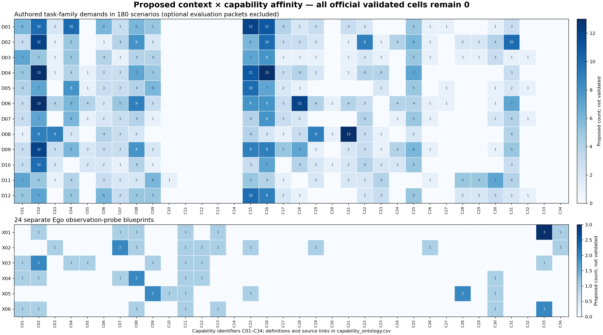

章節與附錄目錄
整體設計、廣度與目標實際執行、模型與驗證待完善事項與驗收Benchmark × 領域／場景／題數規模方案與來源查核完整原生來源盤點01研究目標與當前狀態02用一個例子理解整套系統03規模的六個 granularity levels04文獻地圖、Ego 與預測研究05和既有 benchmark 比，哪些可以復用06完整 benchmark 的覆蓋設計07示範、標註、資料切分與有效性08評測協定、指標與比較方法09六個詳細情境：從概念到驗收10難度如何量化11題數、領域與執行預算12工程實作、資料格式與發布13論文流程與 milestones14版本口徑、閱讀結論與尚待決策48 個任務家族180 個情境藍圖24 個 Ego 題型40 個指標完整分類軸原生規模比較文獻更新與分類250 篇文獻來源與資料字典完整分類軸與覆蓋
34 個能力、12 個變化軸、觀測、機體、學習設定與全部候選覆蓋矩陣。
全庫初始目標為 2,000–3,000 G2，任務數／有效覆蓋各以至少最大可比基準 2× 為目標。現已完成50個Meta-World原生任務的開發執行，本次新初態測試 1,250 次；它們不等於新造或跨作去重後的G2。180個藍圖與原100–140預算保留為歷史種子／方案。
檢視實際結果、重播與適用範圍 →目前還缺哪些證據與實作 →
本附錄完整定義 34 個能力、12 個變化軸、8 個可重疊來源 preset、 7 組獨立觀測軸、6 個候選 robot profiles、5 個 learning regimes，以及 Q0–Q4 readiness。 這些是 coverage facets，不能直接相乘成任務數。
34 個能力標籤
十二個變化軸
在家族內先控制單一變因，再研究組合；完整 Cartesian product 會包含不可解或冗餘配置。可採分層、平衡或有限交叉設計，但須列出沒有測到的互動作用。同時改材料、形狀和背景時，結論只能描述混合 shift。
| ID | 變化軸 | 定義／有效性 |
|---|---|---|
| V01 | 視角與感測 | 相機位置、遮擋、曝光、感測噪音；保留目標可辨識性 |
| V02 | 物件身份／外觀 | 同語義類別的新例項、材質外觀；不自動等同物理材料改變 |
| V03 | 幾何與機構 | 尺寸、形狀、介面、關節；各變化要確認目標仍可解 |
| V04 | 物理／材料引數 | 質量、摩擦、柔順、拉伸、彎曲；記錄校準和有效範圍 |
| V05 | 場景與配置 | 新房間、佈局、容器位置、可達性與背景 |
| V06 | 功能替代與工具可用性 | 改變可用工具／物件但保持意圖；每個替代經人工或專家驗證 |
| V07 | 任務組合 | 保留 primitives，改變依賴圖、目標組合或必要順序 |
| V08 | 時間與記憶負荷 | 必需歷史長度、幹擾 session、延遲與來源混淆 |
| V09 | 執行中擾動 | 明訂語義checkpoint和擾動；完整成功／delivery／conditional recovery分報 |
| V10 | 互動物件與行為 | 不同角色、意圖、速度、可見線索與合作策略 |
| V11 | 指令與資訊充分性 | 改寫、多語、語音噪音、矛盾／缺失；無唯一答案時需調整標籤 |
| V12 | 機體與介面 | 不同末端、DOF、移動能力；獨立 eligibility 與 contract，不暗換控制器 |
來源 presets 與獨立觀測軸
Preset 只是便利設定。每個 instance／source 應另外記錄以下軸，unknown 不自動填入某個來源。
| Preset | 來源設定 | 要求 |
|---|---|---|
| O1 | 文字／語音目標 | 保留語音轉錄與延遲；完整目標文字與影片推斷不得當成相同資訊條件。 |
| O2 | 人類頭戴第一視角 | 記錄頭部運動、時間戳與來源 session；不能等同 robot ego camera。 |
| O3 | 人類胸前／身體攝影機 | 單獨記錄相機安裝位置、手部遮擋和相機座標；不是隻有重新命名 O2。 |
| O4 | 第三視角／多視角人類示範 | 有校準才可使用跨視角3D指標；否則僅宣稱語義對齊。 |
| O5 | VLOG／剪輯教學影片 | 標記剪接、遺漏步驟、旁白、目標資訊充分性與非等速播放。 |
| O6 | 模擬機器人示範 | 可開發環境與產生未來標籤；不得標成人類影片或真實 body-camera 資料。 |
| O7 | 多 session 觀測與互動歷史 | 追蹤來源、時間和幹擾；防止同一來源的 clips 跨 split。 |
| O8 | 非人類第一視角診斷 | 只用於觀測、egomotion或域移診斷，不冒充人類操作示範或robot action資料。 |
獨立觀測欄位
| 獨立欄位 | 可用標籤 |
|---|---|
觀測主體來源agent_origin |
human、robot、nonhuman、mixed、unknown |
相機安裝位置camera_mount |
head、chest_or_body、external、robot_fixed、robot_wrist、virtual、unknown |
視角配對view_pairing |
single_view、synchronized_multiview、asynchronous_semantic_pair、unknown |
時間包裝temporal_packaging |
continuous、excerpt、edited_vlog、variable_rate、unknown |
語言通道language_channel |
none、written_goal、spoken_instruction、narration、mixed |
歷史範圍history_scope |
single_event、single_episode、multiple_sessions |
感測通道sensor_channels |
RGB、depth、audio、IMU、gaze、proprioception、contact_or_tactile |
機體 profile 與學習設定
| ID | 名稱 | 移動底座 | 末端數 | 靈巧手 |
|---|---|---|---|---|
| R1 | 固定單臂夾爪 | 否 | 1 | 否 |
| R2 | 固定雙臂夾爪 | 否 | 2 | 否 |
| R3 | 固定雙臂靈巧手 | 否 | 2 | 是 |
| R4 | 移動單臂夾爪 | 是 | 1 | 否 |
| R5 | 移動雙臂 | 是 | 2 | 否 |
| R6 | 全身／人形機器人 | 是 | 2 | 是 |
這些是能力配置而非已整合 robot 型號。跨機體轉移須驗證 source／target 兩端可解性、共享語義、adapter 與 target-data budget，不能混合不同 action spaces 的 raw success。
學習設定
| Regime | 條件 |
|---|---|
| L0 | 凍結策略，沒有 benchmark 驅動的引數更新 |
| L1 | 使用明訂固定訓練池的離線調適 |
| L2 | 目標任務／機體上固定 few-shot support 預算 |
| L3 | 明訂互動與引數更新預算的線上調適 |
| L4 | 預先排定任務序列與回測時程，儲存 retained-task success matrix |
L4 的任務保留／遺忘，與 T2 的推理時 history memory 不同。普通 trial 清空跨 trial 隱狀態；記憶／continual tracks 只保留協定允許的範圍。
Readiness 與設計元件
| 層級 | 產物 | 通過要求 | 狀態 |
|---|---|---|---|
| Q0 | 語義候選規格 | 來源、計數、目標、近失敗、輸入與 metrics 明確 | 現在全部情境 |
| Q1 | 可追蹤的例項 | assets、初態、目標、controller、reset、量測與觸發繫結 | 尚未完成 |
| Q2 | 專家可解性 | 相同介面可完成、合法替代接受、初態／reset 可追蹤 | 尚未完成 |
| Q3 | 判分器審核 | 成功、近失敗、過程缺漏、量測故障與介入有效性 | 尚未完成 |
| Q4 | 凍結 release | 資料／split／baseline／版本與不確定性可重現 | 尚未完成 |
資料、方法與評測元件的來源連結
| 設計元件 | 來源動機 |
|---|---|
| 機器人資料整理 | [P125] [P126] [P127] [P128] [P129] |
| 影片表示基線 | [P034] [P035] [P139] [P140] |
| 執行基線路線 | [P130] [P138] [P134] [P135] [P136] [P137] [P075] [P077] [P078] |
| 通用策略歷史比較 | [P132] [P133] |
| reward 與外部驗證 | [P111] [P108] [P104] [P107] |
| 不確定性與規模 | [P160] [P159] |
| 文獻範圍 | [P156] [P157] [P158] [P161] [P162] [P163] |
所有元件為 proposed dependency／baseline，沒有在本計畫中執行或驗證。
場域×能力的候選分佈

完整能力矩陣 C01–C17
每格依序為 家族需求／額外 probe 候選／聯集。兩種來源可能重疊，聯集不是直接相加。所有 validated_scenario_count＝0。附錄 B 的卡片可回查個別標籤。
| 能力 | 名稱 | D01 | D02 | D03 | D04 | D05 | D06 | D07 | D08 | D09 | D10 | D11 | D12 |
|---|---|---|---|---|---|---|---|---|---|---|---|---|---|
| C01 | 物件辨識與語義定位 | 6/0/6 | 3/0/3 | 7/0/7 | 5/0/5 | 4/0/4 | 3/0/3 | 3/0/3 | 1/0/1 | 3/0/3 | 3/0/3 | 7/0/7 | 5/0/5 |
| C02 | 三維幾何與座標系理解 | 10/0/10 | 12/0/12 | 5/0/5 | 13/0/13 | 7/0/7 | 13/0/13 | 7/0/7 | 9/0/9 | 12/0/12 | 10/0/10 | 5/0/5 | 7/0/7 |
| C03 | 手物接觸與關係辨識 | 2/0/2 | 1/0/1 | 1/0/1 | 1/0/1 | 0/0/0 | 4/0/4 | 0/0/0 | 9/0/9 | 3/0/3 | 2/0/2 | 1/0/1 | 0/0/0 |
| C04 | 物件狀態與變化辨識 | 10/0/10 | 5/0/5 | 5/0/5 | 4/0/4 | 8/0/8 | 6/0/6 | 6/0/6 | 2/0/2 | 6/0/6 | 0/0/0 | 4/0/4 | 5/0/5 |
| C05 | Affordance 與功能替代 | 0/0/0 | 0/0/0 | 0/0/0 | 1/0/1 | 1/0/1 | 4/0/4 | 1/0/1 | 0/0/0 | 2/0/2 | 2/0/2 | 0/0/0 | 0/0/0 |
| C06 | 從示範推斷目標 | 6/18/18 | 1/18/18 | 4/12/12 | 3/18/18 | 3/12/12 | 2/20/20 | 2/12/12 | 4/14/14 | 3/18/18 | 2/12/12 | 3/12/12 | 6/14/14 |
| C07 | 程式與事件順序 | 3/18/18 | 4/18/18 | 1/12/12 | 3/18/18 | 3/12/12 | 5/20/20 | 3/12/12 | 3/14/14 | 3/18/18 | 1/12/12 | 2/12/12 | 3/14/14 |
| C08 | 因果、依賴與反事實判斷 | 6/18/18 | 8/18/18 | 4/12/12 | 7/18/18 | 4/12/12 | 9/20/20 | 4/12/12 | 2/14/14 | 8/18/18 | 4/12/12 | 2/12/12 | 5/14/14 |
| C09 | 情節與跨 session 記憶 | 5/7/7 | 2/3/3 | 4/4/4 | 5/5/6 | 6/7/8 | 3/5/5 | 1/2/2 | 0/1/1 | 2/4/4 | 1/0/1 | 6/6/7 | 5/6/6 |
| C10 | 注意力與視線證據 | 0/0/0 | 0/0/0 | 0/0/0 | 0/0/0 | 0/0/0 | 0/0/0 | 0/0/0 | 0/0/0 | 0/0/0 | 0/0/0 | 1/0/1 | 0/0/0 |
| C11 | 未來動作與序列預測 | 0/18/18 | 0/18/18 | 0/12/12 | 0/18/18 | 0/11/11 | 0/20/20 | 0/12/12 | 0/14/14 | 0/18/18 | 0/12/12 | 0/11/11 | 0/14/14 |
| C12 | 下一互動物件、接觸與時間預測 | 0/18/18 | 0/18/18 | 0/11/11 | 0/18/18 | 0/11/11 | 0/20/20 | 0/12/12 | 0/14/14 | 0/18/18 | 0/12/12 | 0/9/9 | 0/13/13 |
| C13 | 二維／三維軌跡預測 | 0/18/18 | 0/18/18 | 0/12/12 | 0/18/18 | 0/11/11 | 0/20/20 | 0/12/12 | 0/14/14 | 0/18/18 | 0/12/12 | 0/11/11 | 0/14/14 |
| C14 | Action-conditioned 世界預測 | 0/6/6 | 0/8/8 | 0/2/2 | 0/7/7 | 0/2/2 | 0/6/6 | 0/5/5 | 0/7/7 | 0/5/5 | 0/7/7 | 0/0/0 | 0/3/3 |
| C15 | 多步與長流程規劃 | 12/18/18 | 6/18/18 | 7/12/12 | 11/18/18 | 10/12/12 | 8/20/20 | 4/12/12 | 4/14/14 | 9/18/18 | 3/12/12 | 5/12/12 | 10/14/14 |
| C16 | 剛體抓取與放置 | 11/0/11 | 10/0/10 | 8/0/8 | 13/0/13 | 7/0/7 | 8/0/8 | 8/0/8 | 2/0/2 | 9/0/9 | 7/0/7 | 4/0/4 | 9/0/9 |
| C17 | 關節物件與機構操作 | 4/0/4 | 3/0/3 | 1/0/1 | 3/0/3 | 2/0/2 | 3/0/3 | 3/0/3 | 1/0/1 | 5/0/5 | 0/0/0 | 1/0/1 | 2/0/2 |
完整能力矩陣 C18–C34
每格依序為 家族需求／額外 probe 候選／聯集。兩種來源可能重疊，聯集不是直接相加。所有 validated_scenario_count＝0。附錄 B 的卡片可回查個別標籤。
| 能力 | 名稱 | D01 | D02 | D03 | D04 | D05 | D06 | D07 | D08 | D09 | D10 | D11 | D12 |
|---|---|---|---|---|---|---|---|---|---|---|---|---|---|
| C18 | 精密接觸與裝配 | 2/0/2 | 3/0/3 | 1/0/1 | 4/0/4 | 1/0/1 | 12/0/12 | 2/0/2 | 3/0/3 | 7/0/7 | 4/0/4 | 0/0/0 | 1/0/1 |
| C19 | 雙臂協調 | 3/0/3 | 2/0/2 | 1/0/1 | 2/0/2 | 0/0/0 | 4/0/4 | 0/0/0 | 9/0/9 | 1/0/1 | 2/0/2 | 2/0/2 | 0/0/0 |
| C20 | 手指級靈巧操作 | 0/0/0 | 0/0/0 | 0/0/0 | 0/0/0 | 0/0/0 | 1/0/1 | 0/0/0 | 1/0/1 | 0/0/0 | 1/0/1 | 0/0/0 | 0/0/0 |
| C21 | 形變與拓撲狀態 | 3/0/3 | 1/0/1 | 1/0/1 | 1/0/1 | 0/0/0 | 4/0/4 | 0/0/0 | 13/0/13 | 2/0/2 | 2/0/2 | 2/0/2 | 0/0/0 |
| C22 | 動態、非抓取與物料操作 | 2/0/2 | 9/0/9 | 2/0/2 | 4/0/4 | 0/0/0 | 3/0/3 | 4/0/4 | 3/0/3 | 3/0/3 | 4/0/4 | 2/0/2 | 2/0/2 |
| C23 | 導航與移動操作 | 0/0/0 | 1/0/1 | 1/0/1 | 4/0/4 | 2/0/2 | 0/0/0 | 0/0/0 | 1/0/1 | 1/0/1 | 2/0/2 | 4/0/4 | 3/0/3 |
| C24 | 工具使用 | 0/0/0 | 4/0/4 | 0/0/0 | 0/0/0 | 0/0/0 | 4/0/4 | 1/0/1 | 0/0/0 | 4/0/4 | 2/0/2 | 0/0/0 | 0/0/0 |
| C25 | 集合、數量與庫存一致性 | 5/0/5 | 6/0/6 | 5/0/5 | 7/0/7 | 5/0/5 | 4/0/4 | 5/0/5 | 2/0/2 | 6/0/6 | 5/0/5 | 0/0/0 | 5/0/5 |
| C26 | 錯誤偵測與診斷 | 1/18/18 | 1/18/18 | 1/12/12 | 0/18/18 | 0/11/11 | 1/20/20 | 1/12/12 | 0/14/14 | 1/18/18 | 0/12/12 | 1/11/11 | 0/14/14 |
| C27 | 失敗恢復與重新規劃 | 1/18/18 | 0/18/18 | 0/12/12 | 0/18/18 | 1/11/11 | 1/20/20 | 0/12/12 | 0/14/14 | 0/18/18 | 0/12/12 | 0/11/11 | 0/14/14 |
| C28 | 人類意圖與社交線索 | 0/0/0 | 2/2/2 | 1/1/1 | 0/0/0 | 0/0/0 | 0/0/0 | 0/0/0 | 0/0/0 | 0/0/0 | 0/0/0 | 5/5/5 | 2/2/2 |
| C29 | 協作、時序與角色協調 | 0/0/0 | 2/2/2 | 1/1/1 | 0/0/0 | 0/0/0 | 0/0/0 | 0/0/0 | 0/0/0 | 0/0/0 | 0/0/0 | 5/5/5 | 2/2/2 |
| C30 | 不確定性、主動觀測與詢問 | 1/0/1 | 4/2/4 | 3/1/3 | 0/0/0 | 1/0/1 | 1/0/1 | 2/0/2 | 0/0/0 | 1/0/1 | 0/0/0 | 7/5/8 | 3/2/3 |
| C31 | 必要過程、約束與副作用 | 3/0/3 | 10/0/10 | 1/0/1 | 3/0/3 | 2/0/2 | 7/0/7 | 4/0/4 | 4/0/4 | 5/0/5 | 3/0/3 | 4/0/4 | 2/0/2 |
| C32 | 數位資訊到實體操作 | 0/0/0 | 0/0/0 | 1/0/1 | 0/0/0 | 1/0/1 | 0/0/0 | 1/0/1 | 0/0/0 | 0/0/0 | 0/0/0 | 0/0/0 | 1/0/1 |
| C33 | 全身姿態與自我運動 | 0/0/0 | 0/0/0 | 0/0/0 | 0/0/0 | 0/0/0 | 0/0/0 | 0/0/0 | 0/0/0 | 0/0/0 | 0/0/0 | 0/0/0 | 0/0/0 |
| C34 | 人類技能品質與程式錯誤 | 0/0/0 | 0/0/0 | 0/0/0 | 0/0/0 | 0/0/0 | 0/0/0 | 0/0/0 | 0/0/0 | 0/0/0 | 0/0/0 | 0/0/0 | 0/0/0 |
場域×模組候選數
每欄是可規劃的 scenario affinity，需有資料才形成 G4。不可把各模組相加當獨立 tasks；validated packets 全部為 0。
| 場域 | T1 | T2 | T3 | T4 | T5 | T6 | T7 | T8 |
|---|---|---|---|---|---|---|---|---|
| D01 居家生活空間 | 18 | 7 | 18 | 18 | 18 | 18 | 0 | 6 |
| D02 餐飲服務場所 | 18 | 3 | 18 | 18 | 18 | 18 | 2 | 8 |
| D03 零售門店 | 12 | 4 | 12 | 12 | 12 | 12 | 1 | 2 |
| D04 倉儲與配送場所 | 18 | 5 | 18 | 18 | 18 | 18 | 0 | 7 |
| D05 辦公與行政空間 | 12 | 7 | 11 | 12 | 11 | 11 | 0 | 2 |
| D06 工坊、製造與維修場所 | 20 | 5 | 20 | 20 | 20 | 20 | 0 | 6 |
| D07 實驗室例行物件操作 | 12 | 2 | 12 | 12 | 12 | 12 | 0 | 5 |
| D08 旅宿與洗衣服務 | 14 | 1 | 14 | 14 | 14 | 14 | 0 | 7 |
| D09 建築設施維護服務 | 18 | 4 | 18 | 18 | 18 | 18 | 0 | 5 |
| D10 園藝與戶外作業場域 | 12 | 0 | 12 | 12 | 12 | 12 | 0 | 7 |
| D11 輔助生活服務場域 | 12 | 6 | 11 | 12 | 11 | 11 | 5 | 0 |
| D12 公共場館與活動場域 | 14 | 6 | 14 | 14 | 14 | 14 | 2 | 3 |
| 候選總數（非互斥） | 180 | 50 | 178 | 180 | 178 | 178 | 10 | 58 |
實作階段
| Stage | 候選數 | 定義 |
|---|---|---|
| A | 93 | 優先原型：剛體／機構／宣告狀態；仍未實作驗證 |
| B | 64 | 進階原型：柔性物、特殊接觸或互動；仍未實作驗證 |
| C | 23 | 研究型物理／拓撲／複合互動；驗證前不納入正式成績 |
Physics 與物件結構欄位字典
這些是需要驗證的能力／量測前提。名稱含 validated 的欄位表示入場條件，不表示本計畫已通過驗證。
| Physics key | 中文含義 |
|---|---|
| active_camera_or_navigation | 主動視角／導航 |
| articulation | 關節機構 |
| assembly_connections | 裝配連線 |
| contact_coverage_observer | 接觸覆蓋量測 |
| contact_exchange | 接觸交接 |
| container_contact | 容器接觸 |
| container_geometry | 容器幾何 |
| coupled_contact | 耦合接觸 |
| declared_digital_tool_api | 限定數位工具 API |
| declared_mixing_model | 明訂混合模型 |
| deformation_observer | 形變數測 |
| device_event_model | 裝置事件模型 |
| device_state_model | 裝置狀態模型 |
| dexterous_contact | 靈巧接觸 |
| dual_effector_coordination | 雙末端協調 |
| event_ledger | 事件紀錄 |
| fastener_mechanics | 扣件力學 |
| fixture_if_needed | 必要時的固定治具 |
| fluid_state_observer | 流體狀態量測 |
| fold_state_observer | 摺疊狀態量測 |
| force_or_deformation_observer | 力／形變數測 |
| functional_model | 功能模型 |
| gravity | 重力 |
| history_ledger | 歷史紀錄 |
| human_or_partner_model | 合作方模型 |
| insertion_clearance | 插入間隙 |
| inspectable_state | 可檢查狀態 |
| intent_labels | 意圖示籤 |
| inventory_ledger | 庫存紀錄 |
| load_dynamics | 負載動力學 |
| localization | 定位 |
| material_transfer_model | 物料轉移模型 |
| mobile_manipulation | 移動操作 |
| navigation_collision | 導航／碰撞 |
| partner_motion_policy | 合作方運動策略 |
| partner_policy | 合作方策略 |
| quantity_sensor | 數量量測 |
| query_ground_truth | 查詢答案 |
| reference_state_ledger | 參考狀態紀錄 |
| resource_event_model | 資源事件模型 |
| reversible_connections | 可逆連線 |
| rigid_contact | 剛體接觸 |
| rigid_granular | 剛體顆粒 |
| rope_dynamics | 繩索動力學 |
| self_contact | 自接觸 |
| shape_fit | 形狀配合 |
| shared_load | 共同負載 |
| soft_body | 柔性物理 |
| soft_body_or_rope | 柔性／繩索物理 |
| support_contact | 支承接觸 |
| tool_affordance | 工具功能 |
| tool_contact | 工具接觸 |
| topology_change | 拓撲改變 |
| topology_observer | 拓撲量測 |
| validated_cut_or_tear | 已驗證切割／撕裂 |
| validated_fluid | 已驗證流體模型 |
Object structure tags
| Tag | 含義 |
|---|---|
| articulated_or_fastened | 關節或扣件結構 |
| container | 容器結構 |
| multi_part_or_connector | 多零件／連線件 |
| instance_structure_to_be_bound | 待例項化繫結結構 |